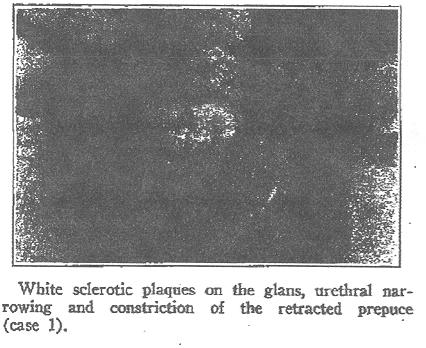

THE CIRCUMCISION REFERENCE LIBRARY
RELATIONSHIP OF BALANITIS XEROTICA OBLITERANS
TO LICHEN SCLEROSUS ET ATROPHICUS
CARL W. LAYMON, M.D. AND CHARLES FREEMAN, M.D.
MINNEAPOLIS ST. PAUL
In 1941, we1 reported observations based on a study of 18 cases of balanitis xerotica obliterans, a disease of the male genitals to which attention was first called by Stühmer2 in 1928. Balanitis xerotica obliterans may be briefly defined as a chronic, progressive, atrophic, sclerosing process of the glans and prepuce leading to urethral stenosis. Operations on the genitals, such as circumcision and dorsal incision, are not etiologic factors in our opinion. In contradistinction to Stühmer's2 belief that the disease occurs only in young adults, we feel that it may occur at any age.
The onset of balanitis xerotica obliterans is as a rule insidious, although it may appear as an acute disease with pain, itching burning, prickling and profuse purulent secretion. It becomes chronic and in most cases slowly progressive up to a certain point, where it remains stationery. In patients who have not been circumcised there is almost constant involvement of the prepuce in the form of a sclerotic, constricting band, which is located 1 or 2 cm. from the distal end. The involvement of the glans may be diffuse or as mottled patches. The admixture of the white plaques and normal red tissue of the glans may give rise to a mosaic appearance, and if telangiectasia is present there may be a resemblance to roentgen ray dermatitis. Fissure and erosions are rather common, andhemorrhagic or serous bullae often accompany the cicatricial changes. The eventual development of carcinoma was reported by Stühmer, Frühwald3 and Grütz.4 One of the noteworthy features of balanitis xerotica obliterans is the gradual narrowing of the urethral meatus, which often leads to almost complete stricture.
The association of balanitis xerotica obliterans and lichen sclerosus et atrphicus was not noted in any of our 18 patients discussed in 1941, although unfortunately we made no careful search for lesions elsewhere on the body. Unless such an examination were made, it would be easy to overlook small papules or patches of lichen sclerosus et atrophicus on the body when attention was focused on the genital lesions which were causing urethral stenosis with resulting disturbances in urination. Our attention was called to a possible relationship between the two diseases in 1940 at a meeting of the Minnesota Dermatological Society, where Dr. Fred Becker presented a patient with unmistakable papules of lichen sclerosus et atrophicus in the clavicular and scapular regions and on the shaft of the penis and scrotum, along with characteristic sclerosing lesions of balanitis xerotica obliterans on the prepuce and glans. It was impossible to obtain a specimen for biopsy from the glans, although the histologic structure of a lesion from the clavicular region was that of lichen sclerosus et atrophicus.
Fabry5 in 1928 reported a case in which there was in all probability as similar association. The patient, aged 35, was said to have had "kraurosis penis" and "white spot disease" on the scrotum. Judging from the photomicrograph in the article, we believe that the eruption was lichen sclerosus et atrophicus.
Montgomery and Hill6 presented an excellent study of lichen sclerosus et atrophicus in 1940. In their group of 46 patients the disease occurred in 8 males, only 1 of whom had penile lesions. In this case there were characteristic papules of lichen sclerosus et atrophicus on the shaft but no sclerosing atrophic lesions on the glans and prepuce such as characterize balanitis xerotica obliterans.
Since our previous report we have carefully examined 6 additional patients with balantis xerotica obliterans. One of these presented no lesions of interest elsewhere on the body. Another showed multiple striae and atrophic scars on the body (said to have followed furunculosis), some of which bore a close resemblance to patches of lichen sclerosus et atrophicus. The cases of the other 4 patients are briefly summarized.
REPORT OF CASES
Case 1.--H. L., a white man aged 25, had three typical plaques of lichen sclerosus et atrophicus on the back, the largest (3 cm. in diameter) in the midline just below the collar line and a smaller lesion (1 cm. in diameter) to either side and below the largest one. The largest one appeard in 1933. There was a similar patch 4 by 3 cm. in the right clavicular region which prevented follicular dilation and plugging. The lesion was noted first in 1939. Several isolated acromatic papules were seen in the left clavicular region.
There were shiny white atrophic patches on the glans and a constricting ring about the prepuce; the frenulum was sclerotic, and the urethral meatus was slightly but definitely narrowed. Tightness of the prepuce was noted at the same time that the clavicular lesion appeared.

Case 2.--C. T., a white man aged 55, presented three pea-sized white papules in the right inguinal region which were typical of lichen sclerosus et atrophicus, In addition, there were distinct urethral stenosis and patchy involvement of the glans which were identical with those of all of our other patients with balanitis xerotica obliterans. No histologic studies were made.
Case 3.--C. D., a white man aged 37, presented a sclerotic band about the prepuce of a year's duration, definite narrowing of the meatus with difficulty in urination, atrophic plaques on the glans, and several white shiny papules over the scapulas which showed well developed follicular plugging. Biopsy was not permitted.
Case 4.--J. P., a white man aged 67, noted difficulty in retracting the prepuce during the summer of 1942. When he was examined in February 1943 there was a constricting band of sclerotic tissue about the prepuce and white patches on the glans but only slight narrowing of the meatus. All along the shaft and extending down to the preputial constriction were white papules such as are seen with lichen sclerosus et atrophicus. There were no other lesions elsewhere on the body. The patient was circumcised and the tissue which was removed included isolated papules and the constricting band, which were in approximation.
COMMENT
In our previous report on balanitis xerotica obliterans we speculated briefly concerning its relationship to lichen sclerosus et atrophicus. The primary lesion of the latter disease is a flat irregular, often polygonal papule of the color of ivory or mother of pearl. The papules may remain discrete, or they may coalesce to form plaques; in most cases both types of lesions are present. The presence of cells and follicular plugs aids in the diagnosis. The article of Montgomery and Hill contains an excellent photograph of multiple discrete papules on the shaft of the penis in lichen sclerosus et atrophicus. One of our patients (case 4) had practically identical lesions plus constricting involvement of the prepuce, plaques on the glans and narrowing of the meatus. The histologic features were entirely consistent with those regarded as characteristic of lichen sclerosus et atrophicus, and, since the patient was circumcised, the opportunity was afforded to compare the histologic features of the isolated papules with those of the constricting band, all in one section. They appeared identical.
It is not our purpose here to discuss the possible relations of lichen planus to lichen sclerosus et atrophicus, although we share the views of Nomland7 and Montgomery and Hill6 that the two are separate entities. In our 24 cases of balanitis xerotica obliterans we never saw associated lichen planus.
We previously stated our opinion that so-called kraurosis penis and balanitis xerotica obliterans are identical, and there is no need to repeat here our reasons for this view. Briefly, however, there are no essential differences in either the clinical or histologic features It is beside the point also in this paper to open discussion as whether balanitis xerotica obliterans (kraurosis penis) is the analog in the male of kraurosis vulvae. Certainly there is considerable difference of opinion concerning the relationship of kraurosis vulvae to lichen sclerosus et atrophicus affecting the female genitals. We plan to make this the subject of a future investigation.
For fully developed balanitis xerotica obliterans it is possible to make a definite histologic diagnosis. The epidermis is distinctly atrophic, with relative and absolute hyperkeratosis. There may be a moderate degree of intracellular edema in the lower portions of the epidermis and slight liquefaction degeneration of the basal layer, beneath which there may be a few lymphocytes. The most striking histologic feature is the band of homogenized connective tissue in the upper portion of the cutis. This zone appears relatively acellular and edematous and may show diminution or complete disappearance of the elastic tissue. We have also seen a bandlike infiltration beneath the homogenized zone in one of our later patients showing that the clinical features of balanitis xerotica obliterans and presenting patches of lichen sclerosus et atrophicus on the body (case 1). It is immediately obvious to dermatopathologists that the aforementioned histologic description of balanitis xerotica obliterans could just as well be used to characterize lichen sclerosus et atrophicus, since the feature of both are identical. In case 1 biopsies were performed on specimens from the clinical lesions of lichen sclerosus et atrophicus on the body as well as from the plaques on the genitals regarded as balanitis xerotica obliterans, and there were no noteworthy differences in the conditions observed.
In case 2 the genital lesions were in every way characteristic of balanitis xerotica obliterans. The lesion in the groin was just as typical of lichen sclerosus et atrophicus, and it is especially interesting that the patient had been seen previously by other dermatologists and that they had expressed the opinion that the disease was lichen sclerosus et atrophicus.
In case 3, although histologic studies were not permitted, the same association was noted clinically.
We are of the opinion, then, that balanitis xerotica obliterans and lichen sclerosis et atrophicus are identical. Lichen sclerosus et atrophicus can occur on the male genitals in two forms: (1) as isolated papules on the shaft and (2) as a constricting band about the prepuce, with plaques on the glans and urethral stenosis. Both forms may coexist, and both may occur alone or with ordinary lesions of lichen sclerosis et atrophicus elsewhere on the body. The histologic features of all types of lichen sclerosus et atrophicus are, as should be expected, the same.
SUMMARY AND CONCLUSIONS
Six cases of balanitis xerotica obliterans are added to the 18 previously reported. Four of the patients had plaques of lichen sclerosus et atrophicus on the body in association with the genital lesions, and another showed typical isolated papules of lichen sclerosus et atrophicus on the shaft of the penis with lesions of balanitis xerotica obliterans on the glans and prepuce.
In our opinion lichen sclerosus et atrophicus and balanitis xerotica obliterans are identical.
Lichen sclerosus et atrophicus may occur on the genitals as (1) isolated papules on the shaft or (2) sclerotic preputial and urethral involvement, with patches on the glans. Both types of genital involvement may occur alone or with lesions on the body. All forms present the same histologic features.
http://www.cirp.org/library/treatment/BXO/laymon1/